Example-unique analyses
01-example_unique.RmdLoading the data
The case study is an integrated metabolic and transcriptional
analysis to understand the rapidly proliferating breast cancers (Liao,
et al., 2022). In this paper, the authors characterized the metabolomic
profile of two types of 31 breast tumors in human to uncovered
pyrimidine metabolism and glutaminolysis pathways are elevated in TNBC.
As an example of mixed metabolites and genes analyses, here we are going
to use both the dataset of metabolite and gene expression data as
reported in the paper. The metabolomics data was accessed from the
Supplementary Tables S2 in the paper, and the gene expression data is
from the author. They found that pyrimidine and purine metabolism,
carbon metabolism, and the energy production related pathways were
highly enriched in Cluster 2 while many lipid/fatty acid metabolism
related pathways were enriched in Cluster 1.
We will use MNet to identify a set of features whose activity changes
significantly between the two sample clusters.This result will hopefully
hint at some specific biological activities that are pathologically
altered in tumoral samples.
the differential metabolite analysis using funciont “DM” in MNet
Pathway enrichment analysis
Extended pathway enrichment analysis (ePEA)
KEGG metabolic pathway-based extended pathway enrichment analysis to investigate the dysregulation of metabolic pathways considering both metabolites and genes using the function “PathwayAnalysis” setting the parameter out is “Extended” in MNet.
## combine the metabolite information and gene information
all_dat <- rbind(diff_gene,diff_meta)
## filter the increase differential genes and metabolites
all_dat1 <- all_dat %>%
dplyr::filter(logFC>0.58) %>%
dplyr::filter(adj.P.Val < 0.05)
## the increase pathway analysis of both genes and metabolites
result1 <- PathwayAnalysis(all_dat1$name,out="Extended",p_cutoff=0.01)
ggsave("result_v0131/EPE1.png",result1$gp,width=30,height = 5)
ggsave("result_v0131/EPE_gene_meta_cluster1.png",result1$p_barplot,width=10,height = 10)
## filter the decrease differential genes and metabolites
all_dat2 <- all_dat %>%
dplyr::filter(logFC < -0.58) %>%
dplyr::filter(adj.P.Val < 0.05)
result2 <- PathwayAnalysis(all_dat2$name,out="Extended",p_cutoff=0.01)
ggsave("result_v0131/EPE2.png",result2$gp,width=30,height=5)
ggsave("result_v0131/EPE_gene_meta_cluster2.png",result2$p_barplot,width=10,height = 10)
p <- cowplot::plot_grid(plotlist = list(result1$p_barplot,result2$p_barplot))
ggsave("result_v0131/EPE_gene_meta.png",p,width=20,height = 10)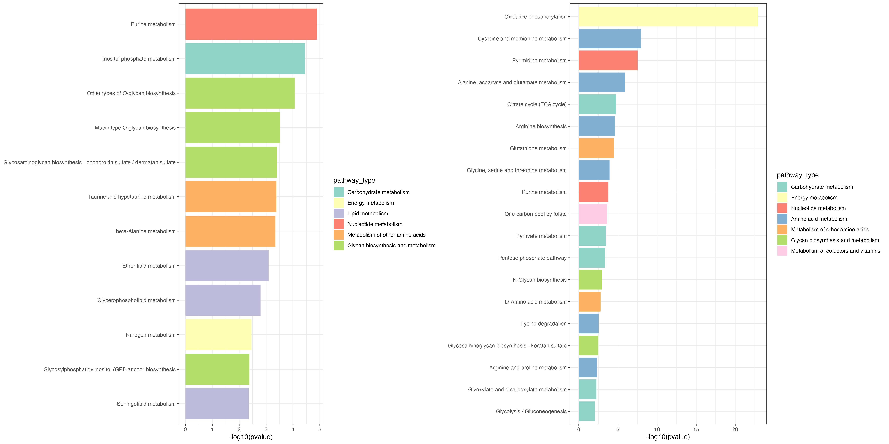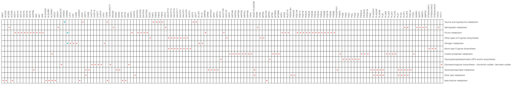
metabolite pathway enrichment analysis (mPEA)
KEGG metabolic pathway-based pathway enrichment analysis to investigate the dysregulation of metabolic pathways considering metabolites using the function “PathwayAnalysis” setting the parameter out is “metabolite” in MNet.
all_dat <- diff_meta
all_dat1 <- all_dat %>%
dplyr::filter(logFC>0.58) %>%
dplyr::filter(adj.P.Val < 0.05)
result1 <- PathwayAnalysis(all_dat1$name,out="metabolite",p_cutoff=0.1)
ggsave("result_v0131/PE_meta1.png",result1$gp,width=5,height = 5)
write.table(result1$output,"result_v0131/PE_meta1.txt",quote=F,row.names=F,sep="\t")
ggsave("result_v0131/PE_meta_cluster1.png",result1$p_barplot,width=10,height = 10)
all_dat2 <- all_dat %>%
dplyr::filter(logFC < -0.58) %>%
dplyr::filter(adj.P.Val < 0.05)
result2 <- PathwayAnalysis(all_dat2$name,out="metabolite",p_cutoff=0.1)
write.table(result2$output,"result_v0131/PE_gene2.txt",quote=F,row.names=F,sep="\t")
ggsave("result_v0131/PE_meta2.png",result2$gp,width=15,height = 5)
ggsave("result_v0131/PE_meta_cluster2.png",result2$p_barplot,width=10,height = 10)
p <- cowplot::plot_grid(plotlist = list(result1$p_barplot,result2$p_barplot))
ggsave("result_v0131/PE_meta.png",p,width=20,height = 10)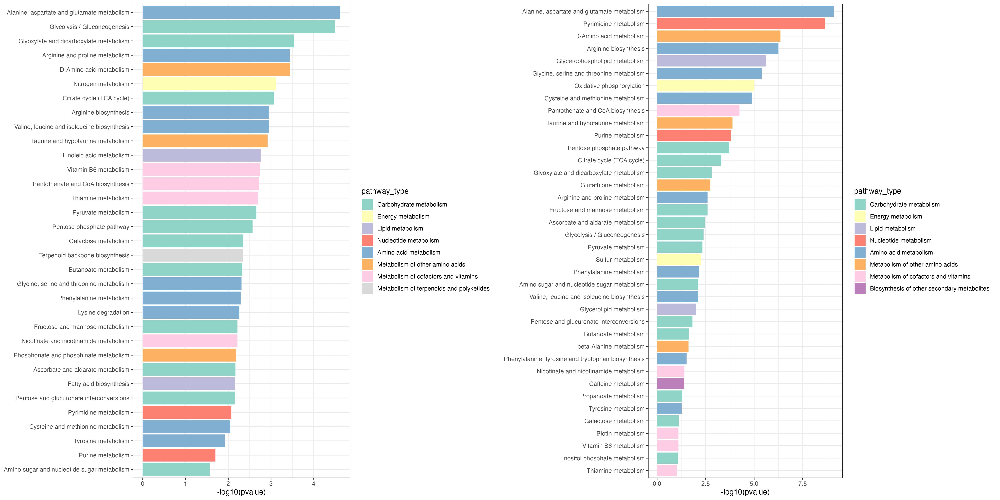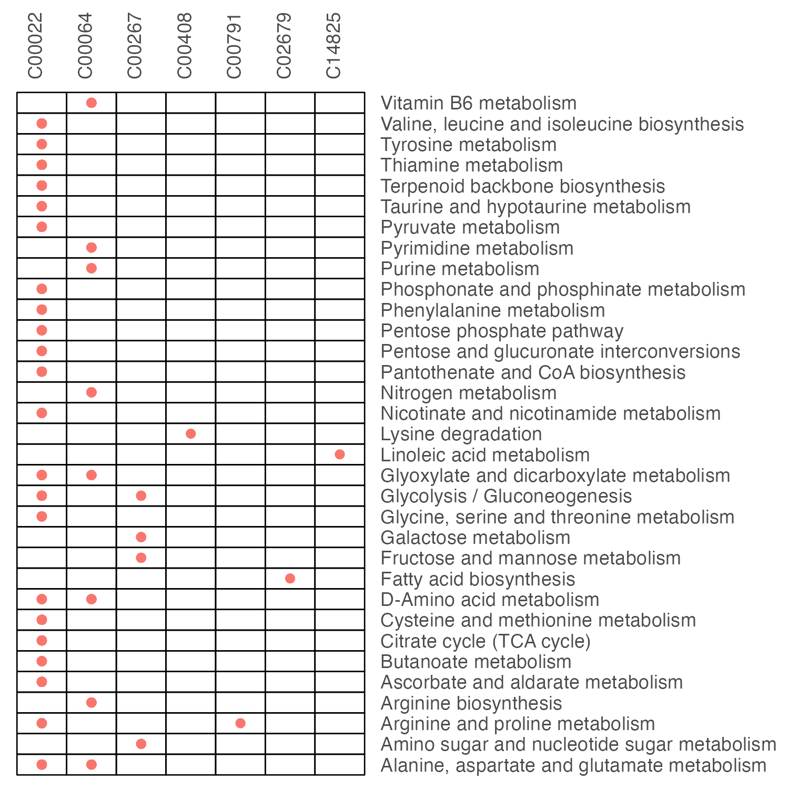

gene pathway enrichment analysis (gPEA)
KEGG metabolic pathway-based pathway enrichment analysis to investigate the dysregulation of metabolic pathways considering genes using the function “PathwayAnalysis” setting the parameter out is “gene” in MNet.
all_dat <- diff_gene
all_dat1 <- all_dat %>%
dplyr::filter(logFC>0.58) %>%
dplyr::filter(adj.P.Val < 0.05)
result1 <- PathwayAnalysis(all_dat1$name,out="gene",p_cutoff=0.1)
write.table(result1$output,"result_v0131/PE_gene1.txt",quote=F,row.names=F,sep="\t")
ggsave("result_v0131/PE_gene1.png",result1$gp,width=30,height = 10)
ggsave("result_v0131/PE_gene_cluster1.png",result1$p_barplot,width=10,height = 10)
all_dat2 <- all_dat %>%
dplyr::filter(logFC < -0.58) %>%
dplyr::filter(adj.P.Val < 0.05)
result2 <- PathwayAnalysis(all_dat2$name,out="gene",p_cutoff=0.1)
write.table(result2$output,"result_v0131/PE_gene2.txt",quote=F,row.names=F,sep="\t")
ggsave("result_v0131/PE_gene2.png",result2$gp,width=25,height = 5)
ggsave("result_v0131/PE_gene_cluster2.png",result2$p_barplot,width=10,height = 10)
p <- cowplot::plot_grid(plotlist = list(result1$p_barplot,result2$p_barplot))
ggsave("result_v0131/PE_gene.png",p,width=20,height = 10)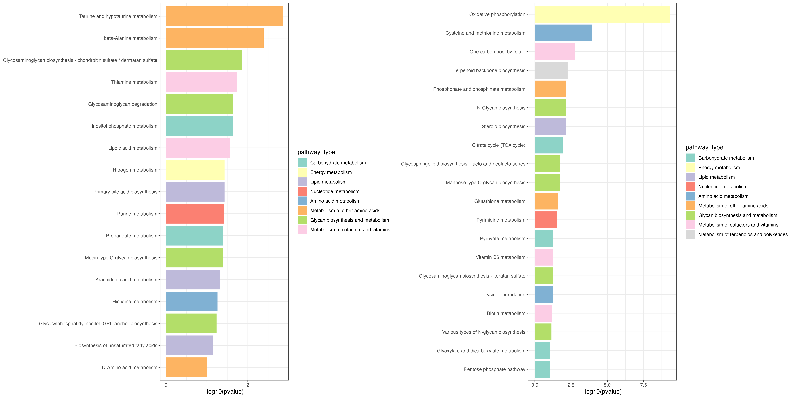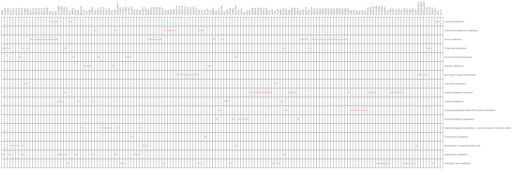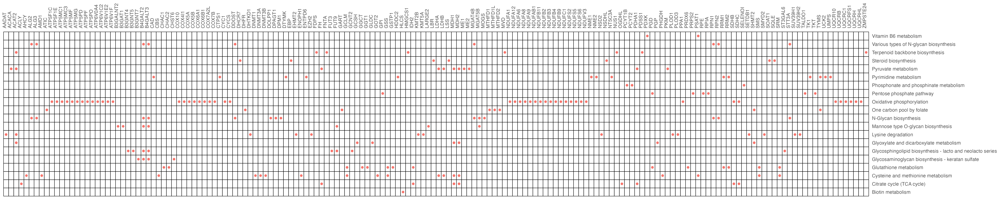
Pathway differential abundance score
Extended pathway differential abundance score (ePDA)
KEGG metabolic pathway-based extended differential abundance (EDA) analysis investigate the dysregulation of metabolic pathways considering both metabolites and genes using the function “DAscore” setting the parameter out is “Extended” in MNet.
diff_gene_increase <- diff_gene %>%
dplyr::filter(logFC>0.58) %>%
dplyr::filter(adj.P.Val < 0.05)
diff_gene_decrease <- diff_gene %>%
dplyr::filter(logFC < -0.58) %>%
dplyr::filter(adj.P.Val < 0.05)
diff_meta_increase <- diff_meta %>%
dplyr::filter(logFC>0.58) %>%
dplyr::filter(adj.P.Val < 0.05)
diff_meta_decrease <- diff_meta %>%
dplyr::filter(logFC < -0.58) %>%
dplyr::filter(adj.P.Val < 0.05)
ExtendDAscore_result <- DAscore(c(diff_gene_increase$name,diff_meta_increase$name),c(diff_gene_decrease$name,diff_meta_decrease$name),c(diff_gene$name,diff_meta$name),min_measured_num = 2,out="Extended")
ggsave("result_v0131/EDA.png",ExtendDAscore_result$p,width=10,height = 10)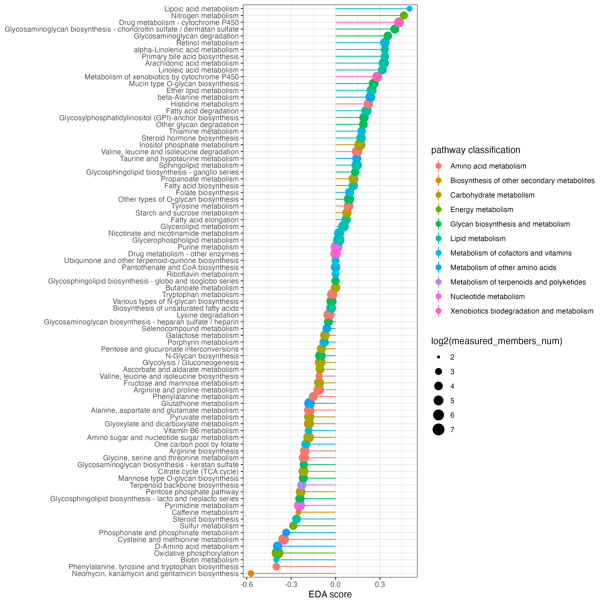
metabolite pathway differential abundance score (mPDA)
KEGG metabolic pathway-based differential abundance (DA) analysis investigate the dysregulation of metabolic pathways considering only metabolites using the function “DAscore” setting the parameter out is “metabolite” in MNet.
diff_meta_increase <- diff_meta %>%
dplyr::filter(logFC > 0.58) %>%
dplyr::filter(adj.P.Val < 0.05)
diff_meta_decrease <- diff_meta %>%
dplyr::filter(logFC < -0.58) %>%
dplyr::filter(adj.P.Val < 0.05)
dascore_result_meta <- DAscore(diff_meta_increase$name,diff_meta_decrease$name,diff_meta$name,out="metabolite")
ggsave("result_v0131/DAscore_metabolite.png",dascore_result_meta$p,width=10,height = 10)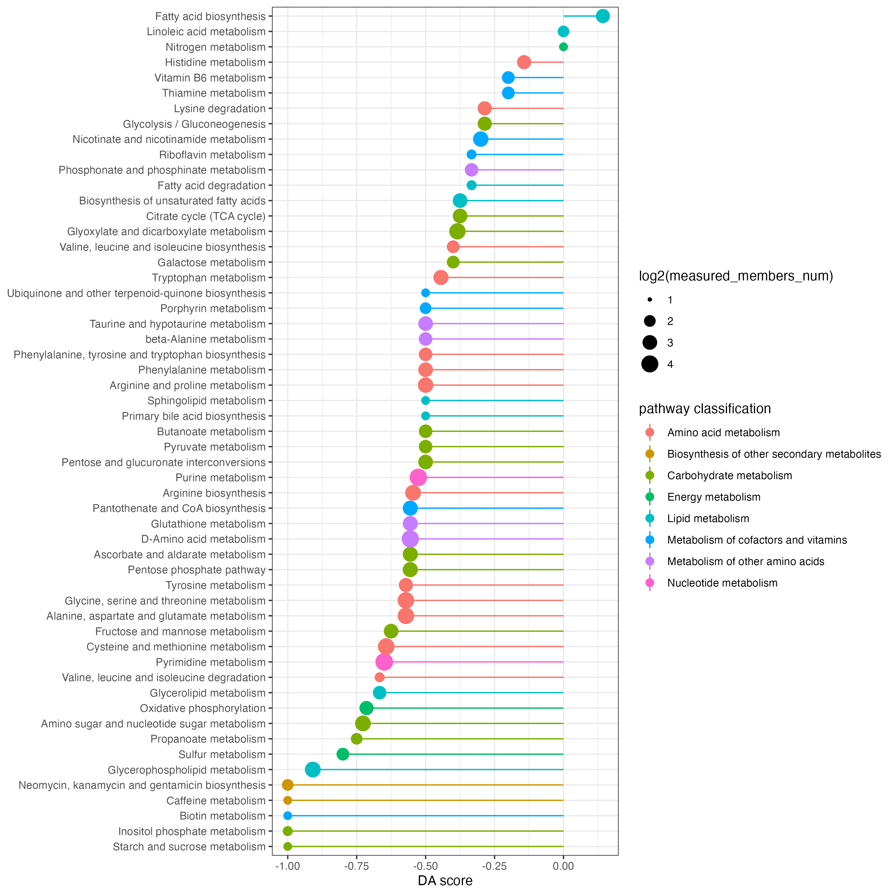
gene pathway differential abundance score (gPDA)
KEGG metabolic pathway-based differential abundance (DA) analysis investigate the dysregulation of metabolic pathways considering only genes using the function “DAscore” setting the parameter out is “gene” in MNet.
diff_gene_increase <- diff_gene %>%
dplyr::filter(logFC > 0.58) %>%
dplyr::filter(adj.P.Val < 0.05)
diff_gene_decrease <- diff_gene %>%
dplyr::filter(logFC < -0.58) %>%
dplyr::filter(adj.P.Val < 0.05)
dascore_result_gene <- DAscore(diff_gene_increase$name,diff_gene_decrease$name,diff_gene$name,out="gene")
ggsave("result_v0131/DAscore_gene.png",dascore_result_gene$p,width=10,height = 10)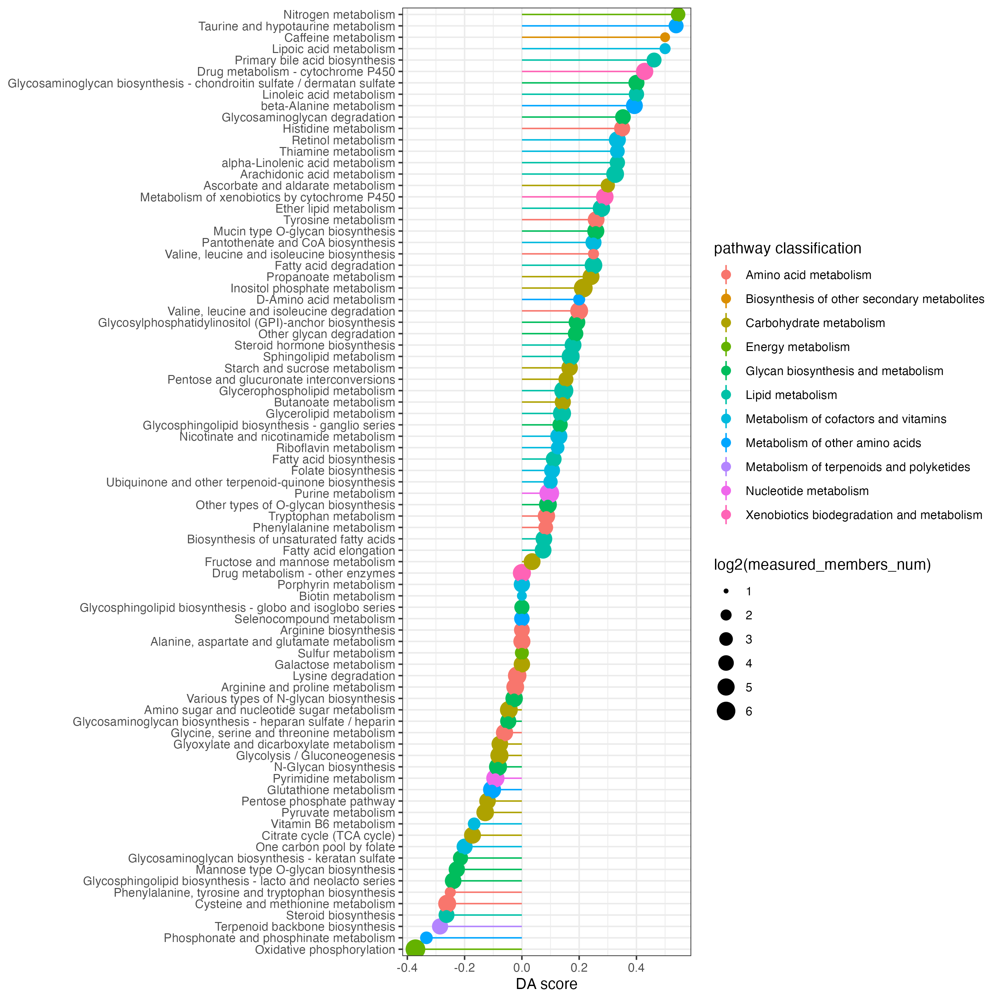
Pathway set enrichment analysis
the extended-data set enrichment analysis, includes gene set enrichment analysis, metabolite set enrichment analysis and extended-data set enrichment analysis which includes gene and metabolite, using function “ESEA” in MNet.
Extended pathway set enrichment analysis (eSEA)
The extended-data set enrichment analysis which includes gene and metabolite
library(clusterProfiler)
library(org.Hs.eg.db)
gene_symbol <- clusterProfiler::bitr(rownames(gse16873.d),fromType ="ENTREZID",toType="SYMBOL",OrgDb = org.Hs.eg.db)
dat <- gse16873.d %>%
as.data.frame() %>%
tibble::rownames_to_column(var="ENTREZID") %>%
dplyr::inner_join(gene_symbol,by="ENTREZID")
gene.data <- dat$DCIS_1
names(gene.data) <- dat$SYMBOL
dat <- c(sim.cpd.data,gene.data)
result <- ESEA(dat,out="extended")
result$leadingEdge <- as.character(result$leadingEdge)
write.table(result,file="result_v0131/ESEA_extended.txt",quote=F,row.names=F,sep="\t")the esea plot of interested pathway
p <- pESEA("Butanoate metabolism",dat,out="extended")
ggsave("result_v0131/ESEA_Butanoate_extended.png",p,width=5,height = 4)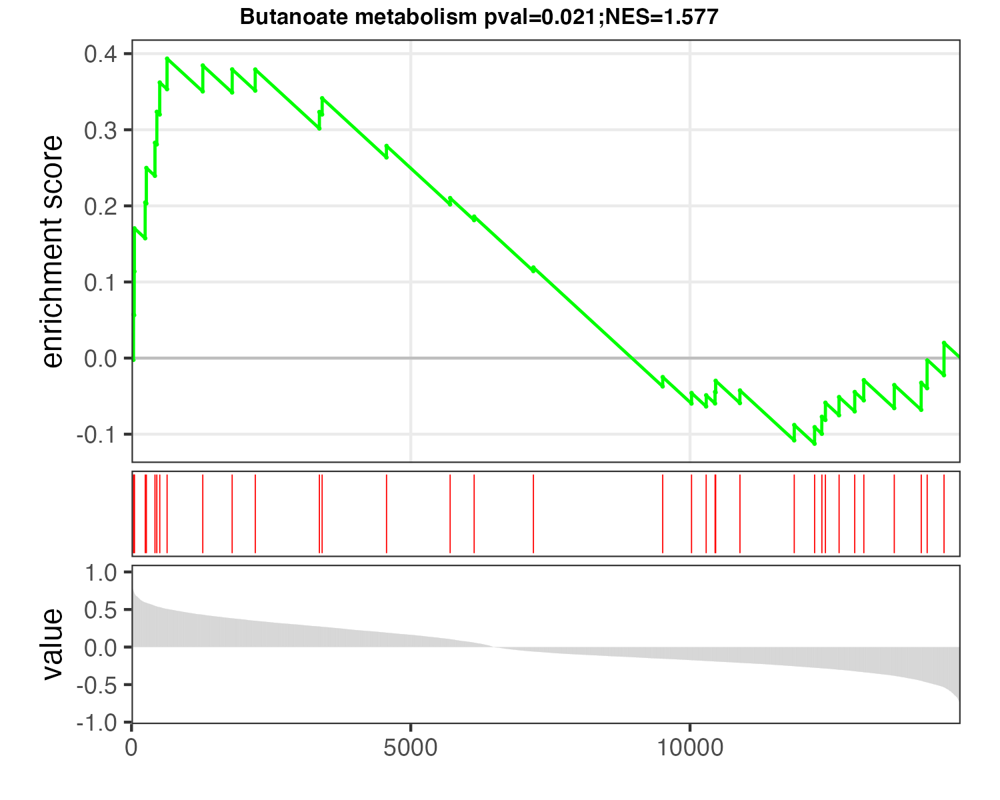
Gene set enrichment analysis (gSEA)
result <- ESEA(gene.data,out="gene")
result$leadingEdge <- as.character(result$leadingEdge)
write.table(result,file="result_v0131/ESEA_gene.txt",quote=F,row.names=F,sep="\t")the esea plot of interested pathway
p <- pESEA("Butanoate metabolism",gene.data,out="gene")
ggsave("result_v0131/ESEA_Butanoate_gene.png",p,width=5,height = 4)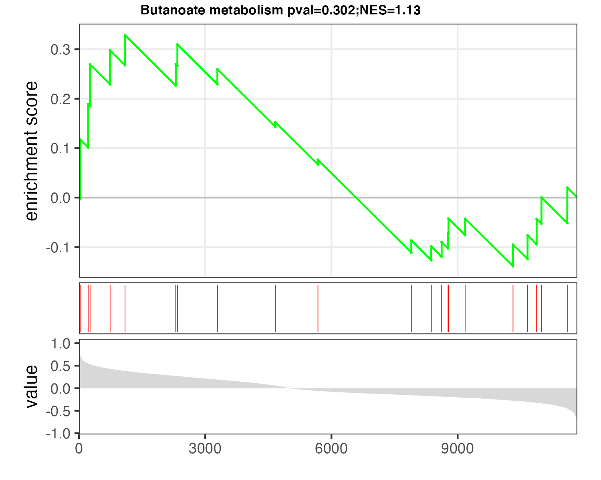
Metabolite set enrichment analysis (mSEA)
result <- ESEA(sim.cpd.data,out="metabolite")
result$leadingEdge <- as.character(result$leadingEdge)
write.table(result,file="result_v0131/ESEA_metabolite.txt",quote=F,row.names=F,sep="\t")the eSEA plot of interested pathway
p <- pESEA("Butanoate metabolism",sim.cpd.data,out="metabolite")
ggsave("result_v0131/ESEA_Butanoate_metabolite.png",p,width=5,height = 4)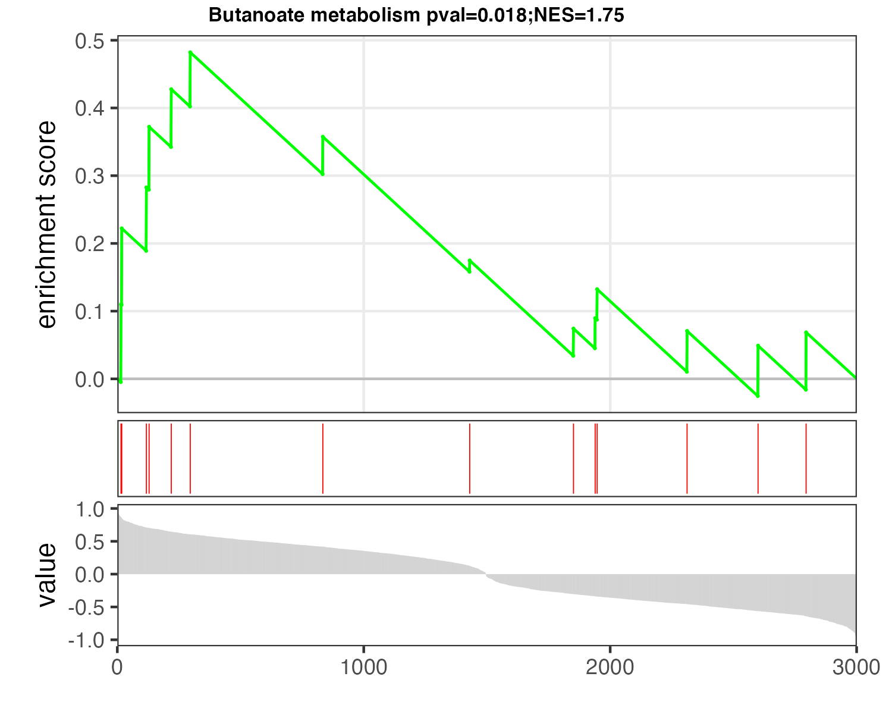
Subnetwork analysis
Subnetwork extraction by dnet
the data need to have the column name “name”, and have the “p_value”, “logFC” is alternative. If have the “logFC”, the color in the figure is the logFC, otherwise, the color “blue” in figure means metabolites and the color “red” means the genes.
names(diff_meta)[4] <- "p_value"
diff_metabolite <- diff_meta %>%
dplyr::filter(adj.P.Val < 0.01) %>%
dplyr::filter(abs(logFC)>1)
names(diff_gene)[4] <- "p_value"
diff_gene1 <- diff_gene %>%
dplyr::filter(adj.P.Val < 0.01) %>%
dplyr::filter(abs(logFC)>1)
png("result_v0131/subnetwork_important.png",width = 8, height = 7, units = 'in', res = 200)
a <- pdnet(diff_meta,diff_gene,nsize=100)
dev.off()
write.table(a$node_result,"result_v0131/subnetwork_important_node.txt",quote=F,row.names=F,sep="\t")
write.table(a$edge_result,"result_v0131/subnetwork_important_edge.txt",quote=F,row.names=F,sep="\t")
Subnetwork extraction of interested metabolites and genes
the data need to have the column name “name”, and do not have the “p_value”
png("result_v0131/subnetwork_interested.png",width = 8, height = 7, units = 'in', res = 200)
## get 500 differential expression gene
a <- pdnet(diff_metabolite[,8],diff_gene1[1:500,8])
dev.off()
write.table(a,"result_v0131/subnetwork_interested_edge.txt",quote=F,row.names=F,sep="\t")
Subnetwork extraction using correlation
png("result_v0131/subnetwork_correlation.png",width = 8, height = 7, units = 'in', res = 200)
a <- pNetCor(meta_dat,gene_dat)
dev.off()
write.table(a$result,"result_v0131/subnetwork_correlation.txt",quote=F,row.names=F,sep="\t")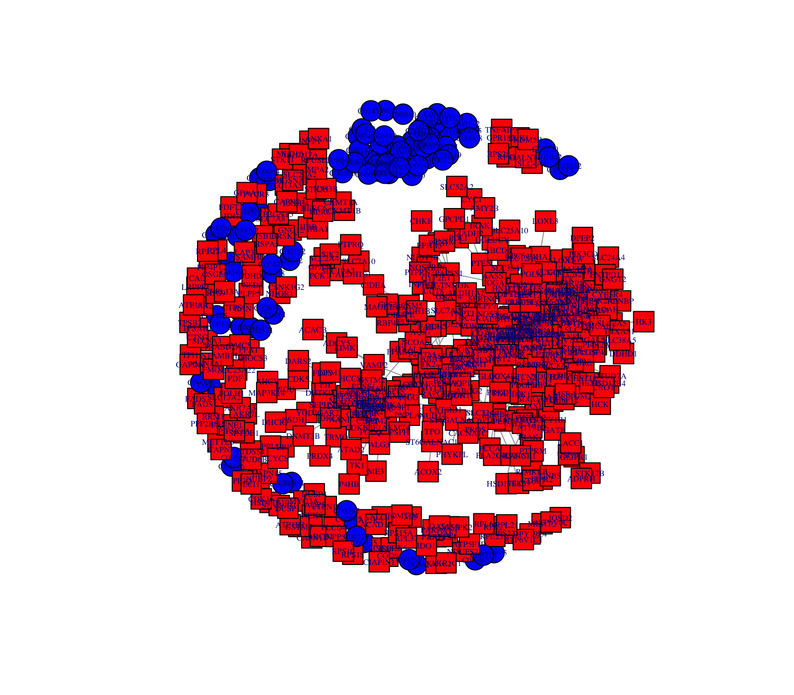